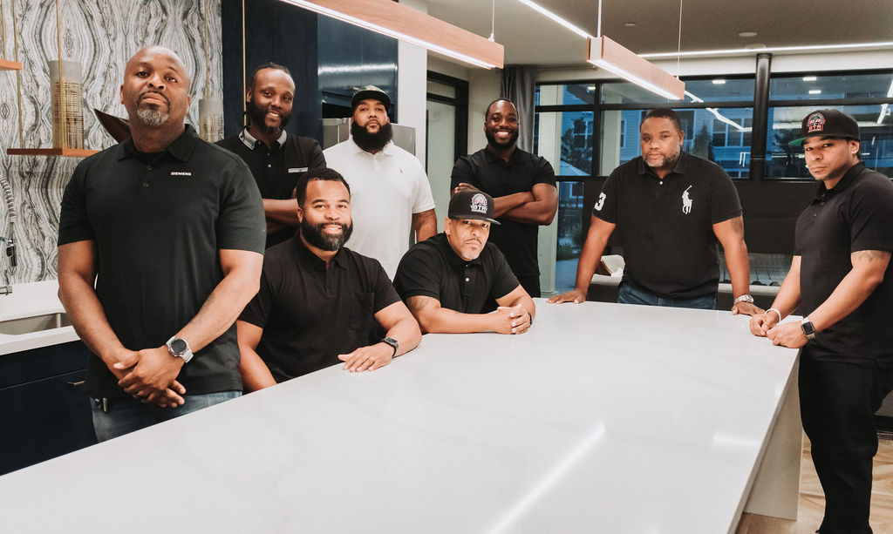
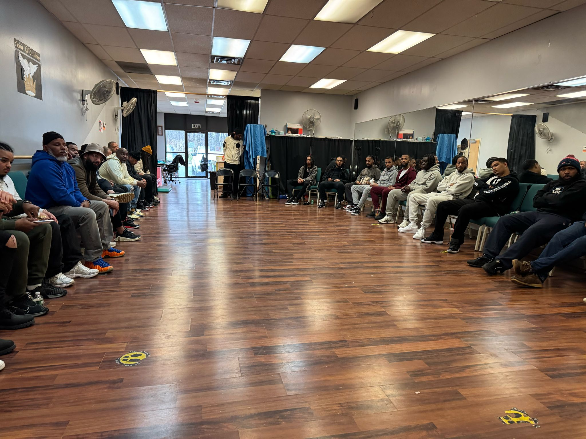
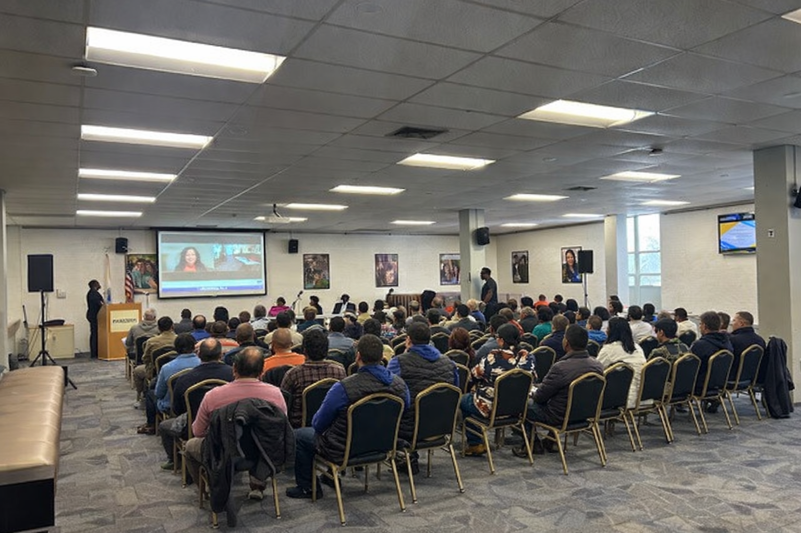

Code of conduct
Read our guidelines for community participation.
Explore code of conductBREAKING THROUGH ROADBLOCKS

At Breaking Through Roadblocks, we empower individuals to overcome obstacles and unlock their full potential.
Grounded in accountability, integrity, communication, and respect, we transform challenges into opportunities.
We are committed to identifying and dismantling the barriers that have traditionally limited growth and success.
Meet our board
GROWTH · CONNECTION · ACCOUNTABILITY
Breaking Through Roadblocks (BTR) monthly men’s meetings are intentional spaces designed to bring men together for growth, connection, and accountability. These gatherings create an environment where men can have real conversations based on life experiences, improve personal development, and navigate challenges with purpose.
Each meeting is built to:
Whether it’s through guided discussions, guest speakers, or group reflection, BTR Monthly Meetings serve as a foundation for building stronger individuals and a more unified community.
AUTHENTICITY · SUPPORT · STRENGTH
Breaking Through Roadblocks (BTR) Women’s Monthly Meetings are empowering spaces created for women to grow, connect, and lead with purpose. These gatherings are rooted in authenticity, support, and strength, providing a safe environment where women can be heard, challenged, and uplifted.
Each meeting is designed to:
Through open dialogue, guided discussions, and intentional reflection, women are equipped with the tools, perspective, and mindset needed to navigate life with clarity, confidence, and purpose.
These are more than meetings. They’re spaces to grow, to heal, to rise, and to step boldly into the woman you are becoming.

EMPOWERMENT · EXPOSURE · UNITY
Breaking Through Roadblocks (BTR) Community Events are designed to bring people together, build connections, and create real impact. These events serve as a bridge to connect individuals, families, and organizations to opportunities, resources, and each other.
Whether it’s networking experiences, community discussions, or large-scale events, each gathering is intentional. We want people to know that we are focused on empowerment, exposure, and unity.
At BTR, we don’t just host events. We create spaces where community shows up, connects, and moves forward together.
Explore BTR events
TENACITY ALLOWS REACHING GOALS EVEN THROUGH STRUGGLES
The T.A.R.G.E.T.S. Program is a comprehensive mentorship and leadership development initiative created by Breaking Through Roadblocks (BTR) to equip young people with the tools, mindset, and exposure needed to succeed in life.
At its core, T.A.R.G.E.T.S. is not a one-time program; it is an ongoing ecosystem of development. Through multiple 10-week cycles offered throughout the year, participants are consistently engaged, supported, and challenged at every stage of their journey.
These cycles serve as structured touchpoints within a larger framework that includes:
T.A.R.G.E.T.S. is designed to meet young people where they are and grow with them over time. Each cycle builds on the last, creating consistency, reinforcement, and real transformation.
This isn’t just a program. It’s a system of support, a pipeline for development, and a foundation for long-term success.
Explore T.A.R.G.E.T.S. & sign upTHE PEOPLE BEHIND THE MISSION
Read our guidelines for community participation.
Explore code of conduct